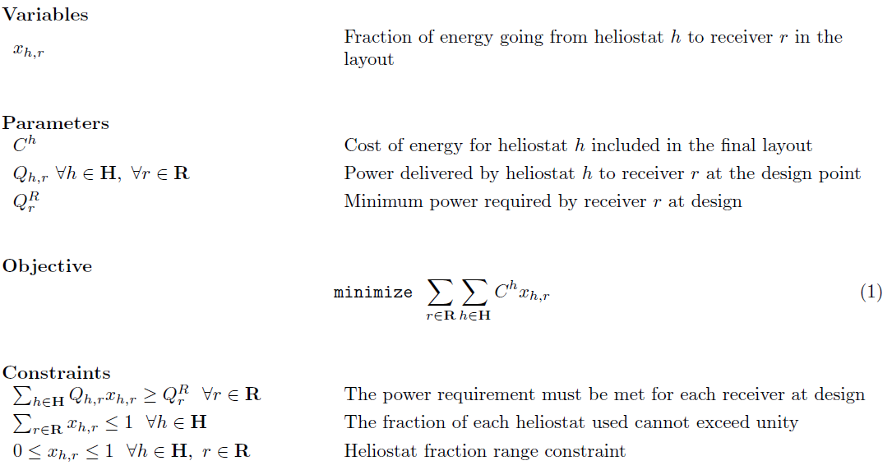
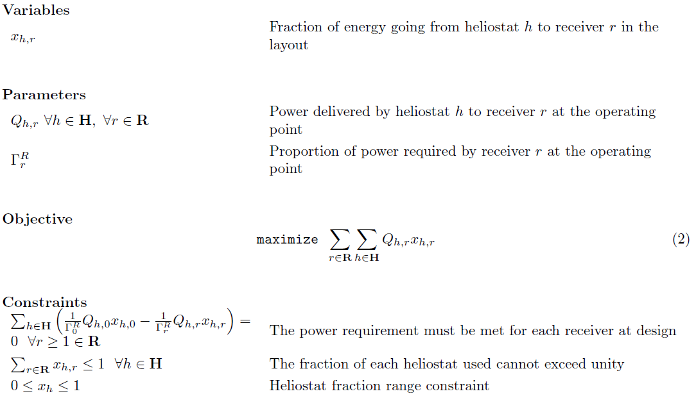

Template management
Page Overview
SolarPILOT can model multiple receiver geometries in a single layout. You can manage the receiver templates on the template management page. This page appears in the page list as Receivers.
Receiver Templates
The Receiver Templates group allows you to add, delete, disable, or rename receiver templates. Actions taken in this group affect the templates that appear in the page list.
Add New [Button]
Add a new receiver template to the system. This action will create a new receiver geometry template that will appear in the page list. The default values for the new template are copied from the first template in the template list. Once created, the geometry and properties of the receiver template can be modified by navigating to the newly created page and specifying values as needed.
When adding a new template, you will be prompted to provide a name for the template. You must use a unique name for each template.
Delete [Button]
Delete the selected receiver template from the template list. This button has no action unless a template is selected. Once confirmed, the action cannot be undone.
Disable [Button]
Disable a selected receiver template. This button has no action unless a template is selected. A disabled template remains a part of the project file, but is not used as part of the solar field design.
Disabling a receiver template may be desired when considering multiple receiver options as part of a field layout, for example.
Rename [Button]
Rename the selected template.
Template [List Control]
The receiver template list provides a full list of all receiver templates that are currently part of the project file. The template name and template state are provided. The template state can be modified using the action buttons described above.
Multi-Receiver aimpoint and layout optimization
SolarPILOT allows simulation of multiple receivers that are powered by the same heliostat field. The software must determine the best strategy for assigning heliostats to each receiver while accounting for heliostat performance as a function of receiver selection, overall power requirements for each receiver, and the change in performance as a function of sun position. SolarPILOT has been extended to optimize both (1) heliostat selection during layout to ensure adequate performance for each receiver, and (2) optimal assignment of a given heliostat field during performance runs to maximize field power output while honoring receiver power constraints.
The optimization process relies on a linear program that apportions power reflected from each heliostat to the possible receiver targets. The program relies on a simplistic representation of the heliostat field and receiver system using a system of linear equations. The power delivered from some heliostat h to some receiver r is given by a variable xh,r, which is a continuous variable. It is theoretically possible that a heliostat may be assumed to be able to provide fractional power to multiple receivers (which is typically not physically possible), but in practice, very few heliostats are observed to behave this way in the linear problem solution.
The complexity of the problem scales exponentially with the number of variables, which can be calculated as the product of the number of heliostats and the number of receivers. As such, designs with large numbers of heliostats or receivers will require more time for the solver to identify the optimal solution. In some cases, the problem may solve quickly (on the order of seconds), while other cases may require several minutes to solve.
The optimization problem is separated into two subproblems, with the formulation for each provided below.
Problem #1: Design
The objective of the design problem is to minimize the pseudo-cost-of-energy of the heliostat field. The pseudo-cost is equal to the cost of the heliostat divided by the total power produced by the heliostat during the layout evaluation phase. Power production of each heliostat at each evaluation point does not consider optimal receiver assignment, but assumes the best possible receiver is the target. The power value from each heliostat to each receiver at design is used to determine whether the receiver power production constraint has been satisfied.

Problem #2: Performance simulation
The objective of the performance problem is to maximize the power production from the heliostat field by choosing the best receiver for each heliostat while meeting the receiver power production requirements. Because power output from a receiver will likely not match the design condition during performance evaluation, the algorithm ensures that the relative power production for each receiver is held constant. For example, consider a 100 MWt (nominal) system with receiver power fractions of 0.25, 0.5, and 0.25. The DNI at design is 1000 W/m2, but during simulation the DNI is reduced at 600 W/m2 (assume the design-point sun position is used). Here, the receivers are required to produce 15 MWt, 30 MWt, and 15 MWt, respectively.

Multi-receiver optimization solver time
Set the maximum amount of time the multi-receiver optimization solver can run before timing out and issuing an error.
Multi-receiver heliostat screen fraction
For Problem #1 (the design problem), reduce the number of heliostats considered for layout by including only those delivering cumulative power equal to the design point power multiplied by the Multi-receiver heliostat screen fraction. Heliostats are included in order of total productivity over the evaluated days and hours during layout, and heliostats are included such that the required power times screen fraction can be delivered to each receiver individually.
Specify multi-receiver power fractions [Checkbox]
Require the power delivered to each receiver to meet the proportionality specified in the power fractions table. When disabled, the power is equally divided among all active receivers.
Specify multi-receiver power fractions [Table]
Specify the ratio of power required for each receiver. The power delivered will be determined by taking the value entered for a given receiver and dividing by the summation of all values. For example, in a 100 MWt system with 3 receivers and inputs of 1, 2, and 1, the design power would be 25 MWt, 50 MWt, and 25 MWt, respectively.
Created with the Personal Edition of HelpNDoc: Write EPub books for the iPad